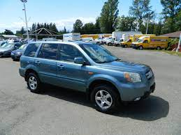

Lab 6 - Arrays & Objects
Challenge
In this lab, with a partner, we have to implement what we learned about arrays and objects to hold information about our options of transportation and our main mode of transportation.
Problems
We didn't experiance any problem. Once again this was a concept that we were able to grasp pretty well!
Reflection
I think that this was a very understandable process. I don't think I'll be able to understand the full power or ability of arrays/objects until we starting working on our projects, potentially, but I can really see how these concepts will be very helpful when storing data. Especially after lab 5, I also feel like we're definitely starting to get more comfortable with the JS environment.
Results
Here's the execution of my javascript code!: